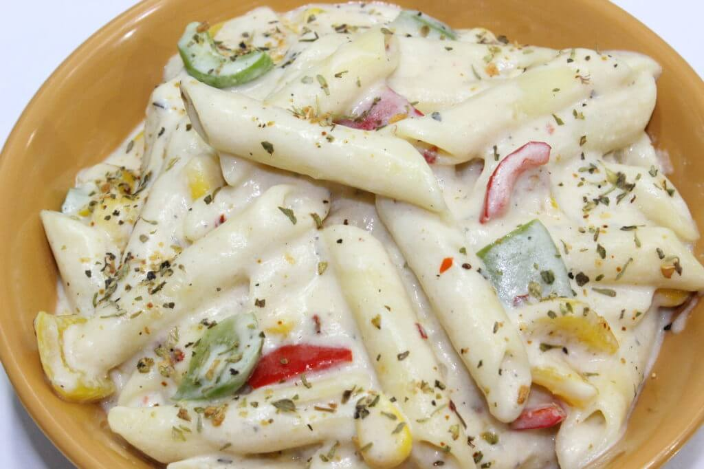

Home
White Sauce Pasta Recipe

Ingredients
- Pasta: 1 cup penne or macaroni
- Butter: 2 tbsp
- Garlic: 1 tbsp, minced
- All-purpose flour (Maida): 1-2 tbsp
- Milk: 1.5 cups (preferably boiled and cooled)
- Veggies: 1/4 cup each (onion, capsicum, carrot, sweet corn)
- Cheese: 1-2 cheese slices or 1/4 cup shredded
- Seasoning: Salt, pepper, red chili flakes, and oregano to taste
Instructions
- Boil Pasta: Boil pasta in salted water with a little oil until 90% cooked, then drain and set aside.
- Sauté Veggies: Sauté finely chopped garlic, onions, carrots, and capsicum in 1 tbsp of butter until soft.
- Prepare White Sauce: Melt 2 tbsp butter in a pan over low heat. Add flour and whisk for 1 minute until smooth. Gradually pour in the milk while whisking continuously to prevent lumps.
- Thicken Sauce: Simmer the sauce for 2-3 minutes until it thickens, then add cheese, salt, pepper, and herbs.
- Combine: Add the cooked veggies and pasta to the sauce. Mix well and cook for 1-2 minutes until everything is well-coated and heated through.
- Serve: Serve hot, garnished with more chili flakes or herbs.